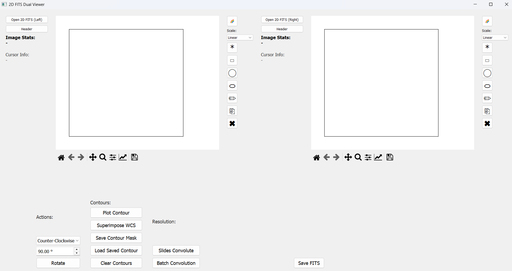
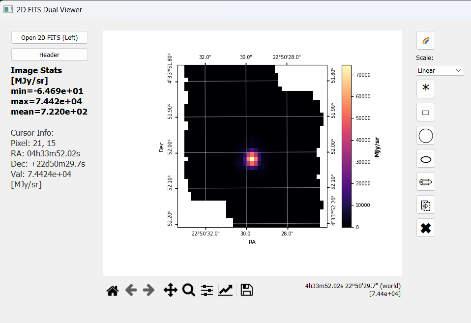
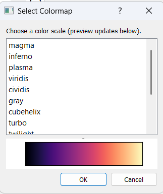
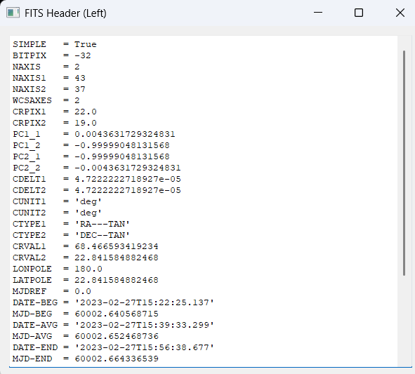
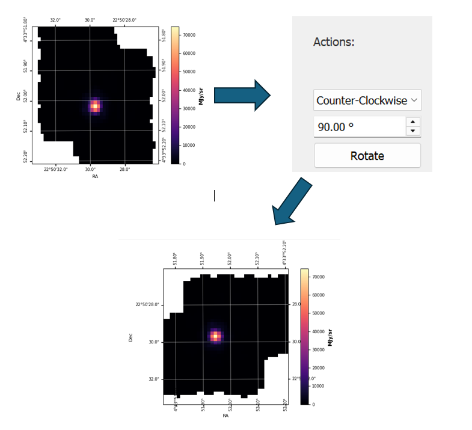
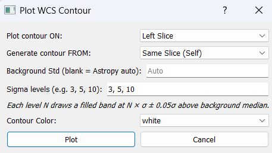
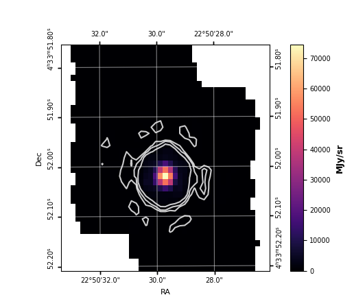
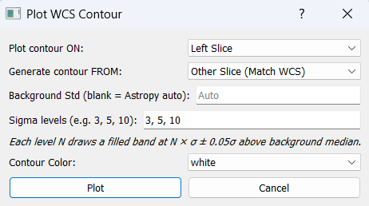
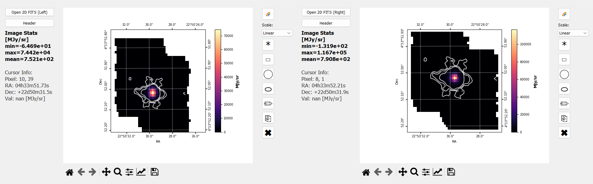
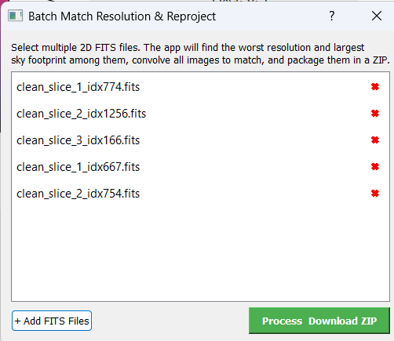

2D FITS Dual Image Viewer
The 2D FITS Dual Image Viewer is a standalone side-by-side viewer for 2D intensity maps, moment maps, and derived FITS products. It is fully WCS-aware, with interactive coordinate display and a full set of multi-image analysis tools.
This guide walks through every feature of the viewer in the order most users will encounter them. For a top-level feature summary, see the 2D FITS Dual Image Viewer section of Features.


Launching the viewer
The 2D Viewer can be opened from the main IFU Analyzer window, or run on its own when no cube is loaded. Either way, you get a dual-panel layout with Left and Right image slots that each behave independently.
Image Display
Loading images
Click Open 2D FITS (Left) or Open 2D FITS (Right) to load a 2D FITS image into the corresponding panel.
Each panel keeps its own WCS, scaling, and colormap state — you can mix any two images of any pixel scale or orientation.
A 2D viewer panel accepts any standard 2D FITS image: intensity maps, Gaussian-derived maps (peak, sigma, area), moment maps, RGB-channel exports, etc.


WCS grid overlay
If the FITS header contains a celestial WCS (
CTYPE1/CTYPE2withRA---*/DEC--*), an RA/Dec grid is automatically drawn over the image.Tick label format auto-scales to the field of view — degrees → arcmin → arcsec → sub-arcsec.
Tick positions remain correct after any rotation.
Non-celestial WCS automatically falls back to plain pixel axes.
Cursor readout and statistics
Move the mouse over either image and the left side panel shows live:
Pixel coordinates
(x, y)RA in
hh:mm:ssDec in
dd:mm:ssFlux value at the cursor (with the unit from
BUNIT)
The Image Stats panel reports min, max, and mean of the displayed image, plus the unit string from
BUNIT.
Color scale and colormap
Each panel has a Scale dropdown with four options:
Linear — direct mapping
Log —
log10of the data (useful for faint extended emission)Sqrt — square-root stretch (intermediate compression)
Power —
data^2stretch (boosts high-flux regions)
Click the 🌈 button on either panel to open the colormap dialog and pick any matplotlib colormap. Colorblind-friendly options are included.


Header viewer
Click Header on either panel to open a dialog listing every FITS header card for that image. Useful for checking
BUNIT, the WCS keywords (CTYPE,CDELT,CD*_*,PC*_*), and instrument identifiers (INSTRUME,TELESCOP).


Image Rotation
The Rotation tool turns the image about its centre by any angle while keeping the WCS correct, so RA/Dec coordinates remain accurate.
Performing a rotation
Select the direction (Clockwise or Counter-Clockwise).
Enter the angle in degrees (any positive number).
Click Rotate and pick the panel (Left / Right) to apply the rotation to.


What happens internally
scipy.ndimage.rotateis used withreshape=Trueandcval=NaN. Border pixels created by the rotation are NaN, not zero, so they don’t contaminate later analysis.The CD matrix is updated as
CD_new = CD_orig × R⁻¹whereRis the 2D rotation matrix for the opposite of the requested angle.CRPIXis not changed — the reference pixel stays anchored to the same sky coordinate, so RA/Dec tick labels remain correct.Rotations are cumulative — applying 30°, then 30° gives the correct 60° image (errors do not stack).
Saving the rotated image
Click Save Rotated FITS to write the rotated image and its updated WCS header to a new FITS file. The new file is self-contained — you can load it into the viewer (or any other tool) and the WCS will be correct.
Contour Plotting
Generate sigma-level contours from one image and draw them on the same panel or on the other panel (WCS-matched cross-image contours).
Drawing contours
Click Plot Contour.
Choose:
Draw on: which panel to draw the contour overlays on (Left / Right)
Source image: same panel, or the opposite panel for cross-image contours
Background std: leave blank to use Astropy
sigma_clipped_stats(3σ clipping) for automatic background estimation; or enter a custom valueSigma levels: comma-separated list, e.g.
3, 5, 10Contour color: any matplotlib color string or hex code
Click OK to draw the contours.
For each level N in your list, a contour line is drawn at
median + N × std, where median and std are from the
background statistics.


The result is a contour overlay on the chosen panel:


Cross-image contours (WCS-matched)
When you generate contours from a different panel’s image, the contour vertices are transformed through both images’ WCS so they land at the correct sky coordinates on the destination panel. This works even when the two images have:
Different pixel scales
Different array sizes
Different orientations
Select Other Slice (Match WCS) as the “Generate contour FROM” source:


The contours then match across both panels via WCS:


Stacking and clearing
Multiple Plot Contour runs add contour sets on top of each other — for example, draw 3σ in white, then 10σ in red.
Click Clear Contours to remove all contour overlays from a panel.
Contour Export / Import
Once you have a set of contours you like, you can persist them in two formats: a human-readable text file or a binary FITS mask.
Save contour as .txt
Click Save Contour Mask → choose the source panel → enter a filename.
Output is a comma-separated ASCII file:
# IFU Analyzer 2D - Contour Export
# level, x_pixel, y_pixel, RA_deg, Dec_deg
3.000000e+00, 42.1234, 18.7654, 67.90591, 18.20682
3.000000e+00, 42.5234, 18.6754, 67.90585, 18.20680
...
Each row is one vertex on a contour path. The sigma level is the first column. Pixel coordinates and RA/Dec are included so the file can be used by any external tool.
Load saved contour
Click Load Saved Contour → pick a binary FITS mask file.
Choose the destination panel.
The mask is reprojected onto the panel’s pixel grid via WCS coordinate mapping and drawn as an overlay.
Save contour mask as FITS
Exports a binary 0/1
uint8FITS image with the WCS header of the source panel.Use this when you need to feed the contour as a mask into another analysis tool.
WCS Superimpose
Overlay two images that have different WCS grids — different pixel scale, array size, orientation, or pointing — onto a single panel.
Procedure
Load one image in the Left panel and another in the Right panel.
Click Superimpose WCS.
Choose:
The background panel (this becomes the reference grid)
The overlay colormap
The overlay alpha (transparency, 0.1–1.0; ~0.5 is a good starting point)
The viewer reprojects the overlay image onto the background image’s pixel grid using the project’s built-in WCS coordinate transform pipeline (no external
reprojectpackage required). Bicubic interpolation (order=3) is used with NaN-aware masking.
Alignment diagnostic
After superimposing, the terminal prints the peak separation — the angular distance between the brightest pixels of the two images, in arcseconds. Use this to confirm the WCS headers agree:
< 0.5 px→ good alignmentLarge separation → WCS header discrepancy (check
EQUINOX,CRPIX, the CD matrix, etc.)
Slides Convolute — pairwise resolution matching
Match the resolution of two images so they can be compared pixel-by-pixel. This is the standard step before any multi-instrument flux comparison (e.g. MIRI vs NIRSpec H₂ intensity).
Procedure
Load both images into the Left and Right panels.
Click Slides Convolute.
A confirmation dialog shows:
Which image will be convolved (the finer one)
The Gaussian kernel σ in arcsec and in fine-image pixels
The output grid dimensions
Click Yes to run.
Choose a save path — the convolved image is written as a 2-HDU FITS (image +
COVERAGEextension).The success dialog shows a flux audit:
Ratio out/in : 1.000000confirms exact flux conservation.
What happens internally
The tool automatically identifies the finer image and convolves it up to the coarser pixel scale:
Kernel width is derived by quadrature subtraction:
σ = √(σ_target² − σ_input²) / 2.3548(in fine-image pixels).Convolution uses
astropy.convolution.convolve_fftwithnan_treatment='interpolate'(NaN pixels — e.g. IFU footprint borders — are handled without propagating gaps),normalize_kernel=True(kernel sum is unity, so surface brightness is preserved per pixel), and NaN-padding of width⌈4σ⌉before the FFT so kernel tails stay inside the domain.A final flux renormalisation guarantees
Σ(output_finite) == Σ(input_finite)to machine precision (~10⁻⁷ relative error).The convolved image is then reprojected onto a new pixel grid at the coarse pixel scale using a flux-conserving spherical-polygon intersection algorithm (equivalent to
reproject_exact— self-implemented; no externalreprojectdependency).Output shape is sized to fully contain the fine image’s original FOV so no sky coverage is lost.
Guards and edge cases
Same-resolution guard: if both panels have the same pixel scale (within 0.0001 arcsec/px), Slides Convolute shows a “nothing to do” message instead of running. This prevents repeated unnecessary convolutions.
No-overlap guard: if the two images cover completely different sky regions, the viewer warns “No Sky Overlap” and refuses to run. Load images of the same field.
Empty-result postcheck: if the inputs technically overlap but the full-coverage output region is empty (e.g. very thin edge-only overlap), the viewer warns and does not save an all-NaN result.
Batch Convolution — multi-image resolution matching
Bring any number of images to a single common resolution and FOV in one step.
Procedure
Click Batch Convolution to open the batch dialog.
Use + Add FITS Files to add two or more 2D FITS files. Any mix of instruments, pixel scales, and orientations is allowed.
Click Process & Download ZIP.
Choose a save path for the output
.zipfile.
The dialog prevents you from launching when the inputs cover disjoint sky regions — a “No Sky Overlap” warning lists which file pairs don’t share sky, so you can remove the off-field file before retrying.


What happens internally
The tool:
Identifies the worst (coarsest) pixel scale among all inputs — this becomes the target scale.
Identifies the largest-area image (most sky coverage) to define the output orientation and centre.
Builds a single common output WCS at the worst scale, sized to cover the union of all input footprints — no image loses sky coverage.
For each input, applies the appropriate Gaussian kernel (σ from quadrature) and reprojects onto the common grid.
Images already at the worst scale receive
σ = 0(no smoothing; only a reproject if needed).
Output
All outputs are packed into a
.ziparchive — one FITS per input, all on the same WCS grid, ready for pixel-by-pixel comparison.Each output FITS includes the
COVERAGEextension (per-pixel overlap fraction 0–1).The completion dialog shows a flux audit table — every row should read
ratio = 1.000000. Any large deviation indicates a corrupted WCS header in the corresponding input.Files that produced an all-NaN frame appear in the audit table with
[EMPTY]next to their name; they’re skipped in the ZIP so the rest of the batch is still useful.
Region Selection
The 2D Viewer supports the same region tools as the main cube viewer:
Point — single-pixel readout
Rectangle — axis-aligned box
Circle — fixed-aspect-ratio ellipse
Ellipse — independently adjustable major and minor axes
Custom polygon — click to add vertices, double-click to close
Once a region is drawn on either panel, statistics appear in the image stats panel: min, max, mean, sum, std for the pixels enclosed by the region. Region handles are interactive — drag to move, drag corners to resize.